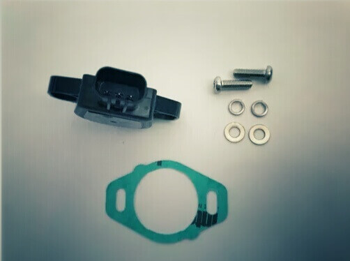
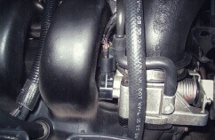
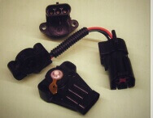

-
Función.
El sensor de posición del acelerador (TPS) es un potenciómetro (un tipo de resistor variable) con una amplia variedad de modelos. La computadora suministra voltaje y tierra al sensor.

-
Localización.
El sensor TPS generalmente se encuentra montado en el exterior del armazón del acelerador y conectado al eje del acelerador.

-
Síntomas de falla.
Cuando el sensor TPS falla, provoca lo siguiente:
• Marcha mínima inestable
• Se enciende la luz Check Engine
• Jaloneo del motor
• Pérdida de potencia
-
Código de falla.
Cuando falla el sensor TPS el scanner reporta lo siguiente: Código OBD II
•P0122 Voltaje bajo del sensor de posición del acelerador (TPS).
•P0123 A. Voltaje alto del sensor de posición del acelerador (TPS).
•P1295 No llega 5.0V REF al sensor TPS. -
Mantenimiento.
Revisa cada 20,000 Km lo siguiente:
• Que el cableado no esté defectuoso (abierto o en corto circuito), en caso necesario reemplázalo.
• Que el arnés no esté quebrado, oxidado o sulfatado, en caso necesario reemplázalo.